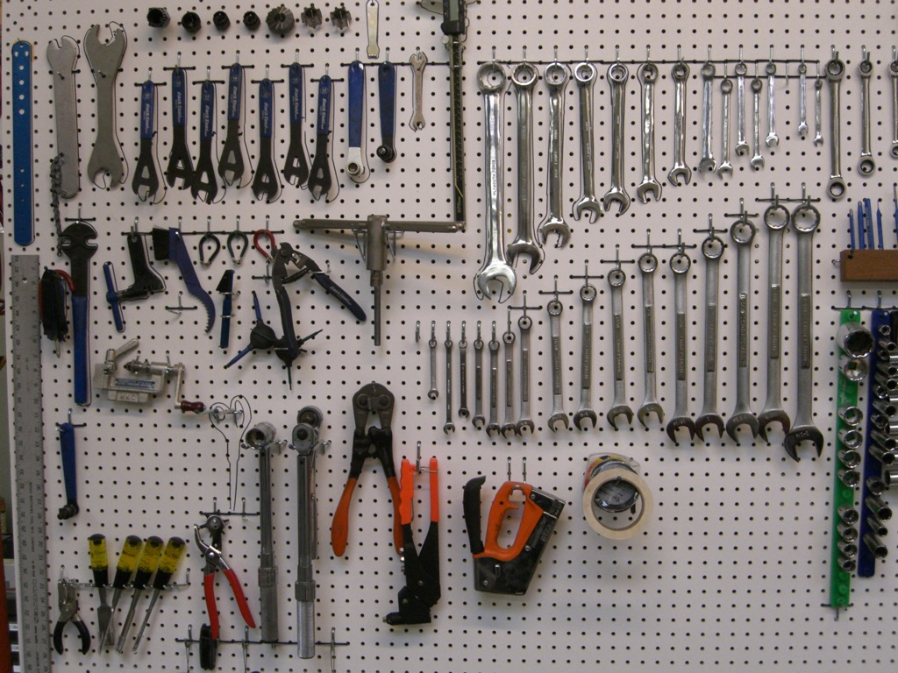
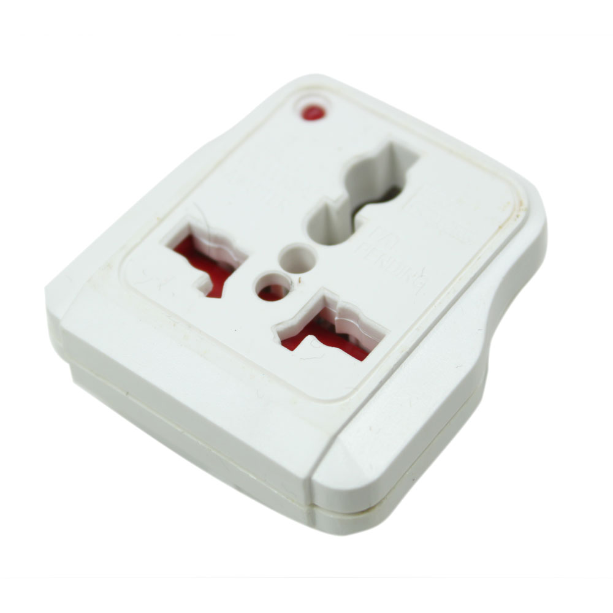
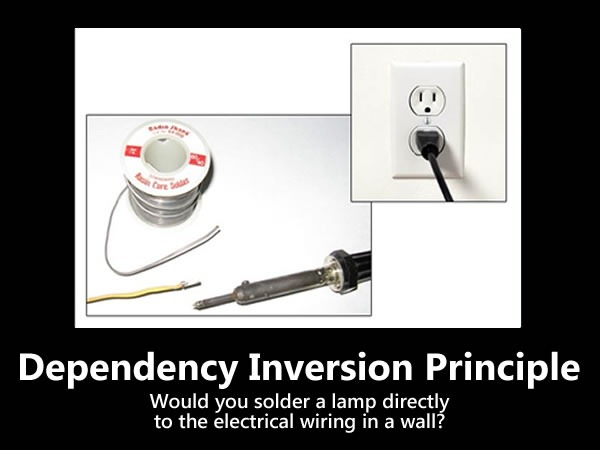
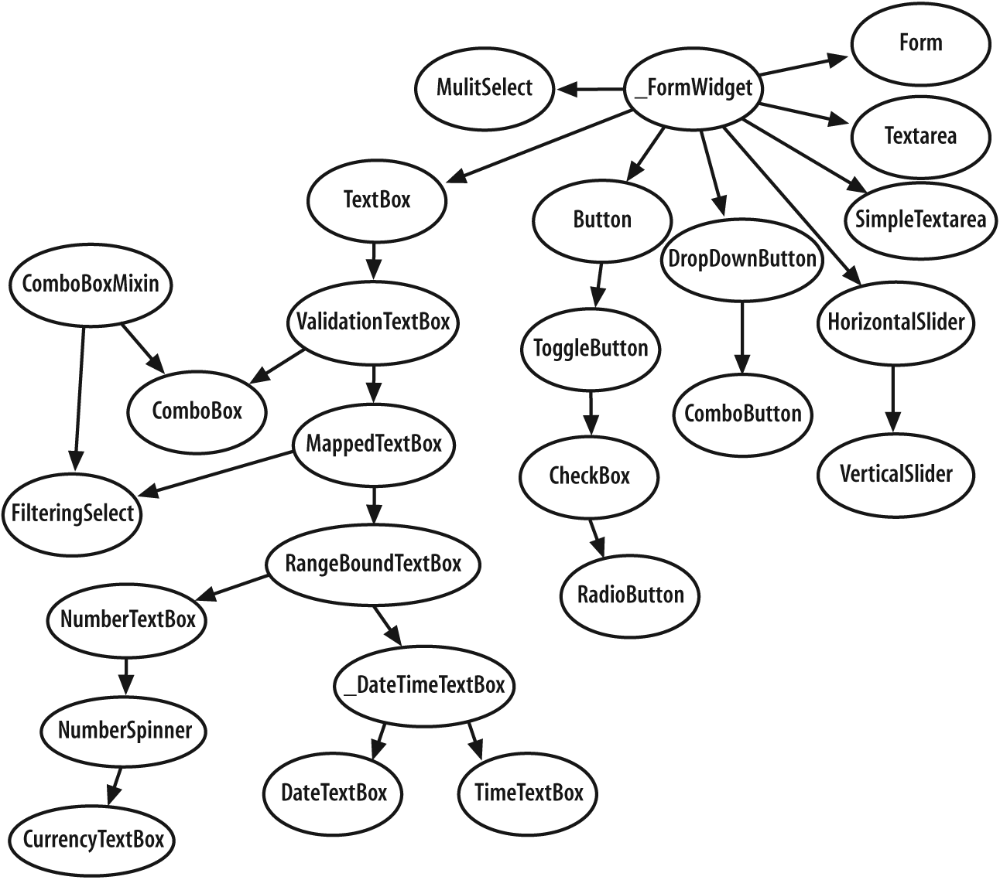

Don't Be STUPID
===============
Grasp SOLID
===========
##### And Other Principles of
##### Object Oriented Design
# These Slides
# Are Availabe
# Right Now:
## blog.ircmaxell.com
## What Is A Paradigm
* Where is state stored?
* Variables?
* Objects?
* No State?
* How is state passed?
* Side Effects / Global?
* Objects?
* ...
* How is state modified?
* Step By Step?
* Actions On State?
* ...
## Procedural Programming
* State Is Stored In Variables
$foo = 123;
* State Is Shared
sort($array);
* State Is Modified Directly
$foo = $foo + 1;
## Functional Programming
* There Is No State
function foo($foo)
* Execution Is Deterministic
foo(123);
* State Is Never Modified
foo($foo + 1)
## Object Oriented Programming
* State Is Stored By Objects
new Class($initialState)
* State Is Passed By Objects
$object1->foo($object2);
* State Is Modified Via Methods
$object->doSomething();
# None Of These Principles
# Are Limited To OOP
##### They can be applied to any paradigm
# All Of These Principles
# Are For Production Code
##### They can be violated while developing
- S
- ingletons
- T
- U
- P
- I
- D
## Singletons
* What Is a Singleton?
* Global State
* Static Coupling
* Hard-Coded Dependency
* Spooky Action At A Distance
* But I Only Want One Instance!
* So, Only Call **new** Once
* And you only want one now...
* But All My Classes Need It
* Inject As A Dependency
* Singletons Are Not OOP!
* They are a COP construct
## Singletons (ctd)
class Foo {
private static $instance;
private function __construct() {}
public static function getInstance() {
//...
}
}
class Bar {
protected $foo;
public function __construct() {
$this->foo = Foo::getInstance();
}
}
## Singletons (ctd)
class Foo {
}
class Bar {
protected $foo;
public function __construct(Foo $foo) {
$this->foo = $foo
}
}
- S
- ingletons
- T
- ight Coupling
- U
- P
- I
- D
## Tight Coupling
* Coupling Two Unrelated Classes
* Through Type Hints
* Through Static Calls
* Through Direct Instantiation
* Complicates:
* Integration
* Testing
* Reuse
* Modification In General
1. Bug Fixes
2. New Functionality
3. New Responsibilities
## Tight Coupling (ctd)
class Foo {
}
class Bar {
protected $foo;
public function __construct(Foo $foo) {
$this->foo = $foo
}
}
## Tight Coupling (ctd)
interface doFoo {
}
class Foo implements doFoo {
}
class Bar {
protected $foo;
public function __construct(doFoo $foo)
{
$this->foo = $foo
}
}
- S
- ingletons
- T
- ight Coupling
- U
- ntestable Code
- P
- I
- D
## Untestable Code
* Untestable Is Unmaintainable
* Factors:
* Tight Coupling
* Doing Too Much
* Long Methods
* Complex Code
* Complicates:
* Testing
* Maintenance
* Robustness
## Untestable Code (ctd)
class Foo {
}
class Bar {
public function doSomething() {
Foo::getInstance()->doBar();
}
}
## Untestable Code (ctd)
class Foo {
}
class Bar {
public function doSomething(Foo $foo) {
$foo->doBar();
}
}
- S
- ingletons
- T
- ight Coupling
- U
- ntestable Code
- P
- remature Optimization
- I
- D
## Premature Optimization
* Rules of Optimization:
1. Don't Do It!
2. (experts only) Don't Do It Yet!
* It's Easier To Optimize
Correct Code
* Than Correct Optimized Code
* 90/10 Rule:
* 90% of Performance Problems
Come From 10% of Code
* Save Time
* Optimized When It's Proved A Problem
## Premature Optimization (ctd)
class Bar {
public function doStuff(array $array) {
$i = 0;
foreach ($array as &$value) {
$i++;
}
return $i;
}
}
- S
- ingletons
- T
- ight Coupling
- U
- ntestable Code
- P
- remature Optimization
- I
- ndescriptive Naming
- D
## Indescriptive Naming
* Naming Is Hard!
* But Very Important
* Names Should Self-Document
* As Succinct As Possible
* Favoring Clarity Over Brevity
* Code is Read Far More Often
Than Written
* So Save Time, Write Clearly
* 60/60 Rule
* 60% Of Cost Comes Post Deployment
* 60% Of That Cost Comes From Changes
## Indescriptive Naming (ctd)
class Bar {
protected $a;
public function __construct(Foo $a) {
$this->a = $a;
}
public function doStuff() {
$this->a->doSomethingElse();
}
}
## Indescriptive Naming (ctd)
class FileAdapter {
protected $file;
public function __construct(File $file) {
$this->file = $file;
}
public function delete() {
$this->file->remove();
}
}
- S
- ingletons
- T
- ight Coupling
- U
- ntestable Code
- P
- remature Optimization
- I
- ndescriptive Naming
- D
- uplication
## Duplication
* Do I Need To Say More?
* DRY
* Don't
* Repeat
* Yourself
## Duplication (ctd)
class Bar {
public function findByName($name) {
$sql = 'SELECT *
FROM bar
WHERE name = ?';
}
public function findById($id) {
$sql = 'SELECT *
FROM bar
WHERE id = ?';
}
}
## Duplication (ctd)
class Bar {
public function findByName($name) {
$this->findBy('name', $name);
}
public function findById($id) {
$this->findBy('id', $id);
}
}
# Controlling complexity
# is the essence of
# computer programming.
##### Brian Kernighan
- S
- ingle Responsibility Principle
- O
- L
- I
- D

## Single Responsibility Principle
* Classes Should Have Only
One Reason to Change
* They Should Have One Responsibility
* And Encapsulate it Fully
* How Can This Be Possible?
* By Properly Abstracting Classes
* By Coupling on Abstractions Instead of Details
* Change Becomes Localized
* Reduces "Ripple Effects"
* Reduces Complexity of Change
* Reduces Cost of Change
- S
- ingle Responsibility Principle
- O
- pen/Closed Principle
- L
- I
- D
## Open / Closed Principle
* Code Should Be:
* Open For Extension
* Closed For Modification
* Only Bug Fixes Allowed!
* Compare:
* Facebook - Changing API
* StackOverflow - Versioned API
* In Other Words:
* Don't Perform Surgery When
Putting On A Hat Will Do
- S
- ingle Responsibility Principle
- O
- pen/Closed Principle
- L
- iskov Substitution Principle
- I
- D

## Liskov Substitution Principle
* Parent Types Should Be Replaceable
By Child Types
* Therefore:
* Children Should Accept More Liberally
* Children Should Produce More Strictly
* Invarients Must Be Preserved
* Exceptions Should Be Stricter
* However:
* Does not apply to siblings
* Does not apply in reverse
- S
- ingle Responsibility Principle
- O
- pen/Closed Principle
- L
- iskov Substitution Principle
- I
- nterface Segregation Principle
- D

## MultiFunction Interface
public function print($page);
public function scan();
public function fax($page, $number);
public function readCard();
public function importPhotos();
## Printer Interface
public function print($page);
## Scanner Interface
public function scan();
## Fax Interface
public function fax($page, $number);
## CardReader Interface
public function readCard();
## Camera Interface
public function importPhotos();
## Interface Segregation Principle
* Many Client-Specific Interfaces
Are Better Than One Big One
* The Key Is Minimizing Coupling Surface
* Decreases Coupling Between Objects
* Can be interfaces
* Or Classes (Facade Pattern)
* Or Packages
* Or Layers (View Layer, etc)
* Inverts The Dependency
- S
- ingle Responsibility Principle
- O
- pen/Closed Principle
- L
- iskov Substitution Principle
- I
- nterface Segregation Principle
- D
- ependency Inversion Principle

## Dependency Inversion Principle
* High level modules should depend
upon Abstractions, not low-level
modules
* This reduces coupling, and makes
abstract code reusable
* Abstractions should not depend
upon Details, but Details should
depend upon Abstractions
* Keep Abstractions clean
* Keep Abstractions Reusable
* Focus On Abstraction, Not Detail
# Simplicity carried
# to the extreme
# becomes elegance.
##### Jon Franklin
# Some Additional
# Patterns
# Deep
# Inheritance

# Deep Inheritance
* Adds Unnecessary Complexity
* Tightly Couples Trees
* A Form Of Static Coupling
* Favor Composition
Over Inheritance
# Leaky
# Abstractions


## Leaky Abstractions
* They Are Everywhere
* Database Connections
* File-systems
* Floating Point Numbers
* Fixed-Size Integers (64 bit)
* They Are Impossible To Avoid
* All Abstractions Leak
* Leaks Are Technical Debt
* Fix Leakage When Found
* Maintain The Abstraction
* Capture Exceptions
* Check For Side-effects
## Leaky Abstractions (ctd)
* Leaky:
try {
$mapper->loadPerson(1);
} catch (DatabaseQueryException $e) {
/* Woah!
What Does The DB have to do
With Anything???
*/
}
## Leaky Abstractions (ctd)
* Better:
try {
$mapper->loadPerson(1);
} catch (RecordNotFoundException $e) {
/* Eih!
A Person May Be A Record
But If It's A First-Class
Object, Why Leak The Record
Part???
*/
}
## Leaky Abstractions (ctd)
* Better Still:
try {
$mapper->loadPerson(1);
} catch (PersonNotFoundException $e) {
/* I Get It!
The Person Wasn't Found!
It All Makes Sense!
*/
}
# Law of
# Demeter

## Law of Demeter
## Principle of Least Knowledge
* Know As Little As Possible
* Only Talk To Friends
* Objects Closely Related To The Class
* Reduces Dependencies
* Benefits:
* Maintainable Code
* Reusable Code
* Easy To Understand Code
# Real World
# Applications
## (And Problems)
## Active Record
* Business Objects Are "Active"
$obj->save();
* Violates:
* Tight Coupling
* Single Responsibility Principle
* Open Closed Principle
* Interface Segregation Principle
* Dependency Inversion Principle
* Leaky Abstractions
## Active Record (ctd)
* ORM Has The Same Problems
* Only If Applied To Business Objects
* Can Be Used In A Data Mapper
* (A Layer Between Business And Persistence)
## Service Locator
## Dependency Injection Container
## Global Registry
* A Container Is Injected
* Dependencies Are "Pulled" From Container
* Violates:
* Tight Coupling
* Single Responsibility Principle
* Dependency Inversion Principle
* Law Of Demeter
## Service Locator (ctd)
* Better Than Concrete Dependencies
* Adds A Place To Inject Mocks
* It Is Testable
* **NOT** Dependency Injection
* Depends On A Concrete Locator
* Class Is Not Dependent Upon An Abstraction
## The `new` Operator
* Instantiating Classes Inside Objects
* Instead Of Injecting Dependencies
* Violates:
* Tight Coupling
* Untestable Code
* Single Responsibility Principle
* Dependency Inversion Principle
* Static Coupling


## The `new` Operator (ctd)
* Creating Is a Responsibility
* Invert The Dependency
* By Injecting The Dependency
* A Few Exceptions:
* The *main* method
* Factories
* Builders
* Concrete Proxies
## Method Chaining
## Fluid Interfaces
* Call Methods On Each Other
* "Tells A Story"
$foo->bar()->baz()->biz()->baz()->buz();
* Violates:
* Tight Coupling
* Untestable Code
* Dependency Inversion Principle
* Leaky Abstractions
* Law of Demeter
## Complexity
* Abstraction Should Be Fractal
* Methods Abstract Operations
* Classes Abstract Responsibility
* Layers Abstract Functionality
* Packages Abstract Concepts
* Libraries Abstract Interactions
* Frameworks Abstract Communication
* By Maintaining The Abstraction
* We Can Focus On What
Rather Than How
## Compare:
* PHPASS:
* 1 Class
* 2 Hashing Methods
* 2 Pseudo-Random Generators
* Class Oriented Programming
* PHP-PasswordLib
* 38 Classes
* 4 Interfaces
* 12 Hashing Methods
* 6 Pseudo-Random Generators
* Object Oriented Programming
# Good
# Is Not
# Good Enough
# These Are
# Principles
# You Can
# Bend Them
# You Can
# Break Them
# But
# Understand
# Them
# Know What
# You're
# Giving Up
# And Understand
# Why You're
# Giving It Up
# At The End
# Of The Day
# Working
# Is Better Than
# Perfect
## A Foolish Consistency
## Is The Hobgoblin
## Of Little Minds
##### Ralph Waldo Emerson
1. Questions?
2. Comments?
3. Snide Remarks?
## Anthony Ferrara
## @ircmaxell
## blog.ircmaxell.com
## me@ircmaxell.com